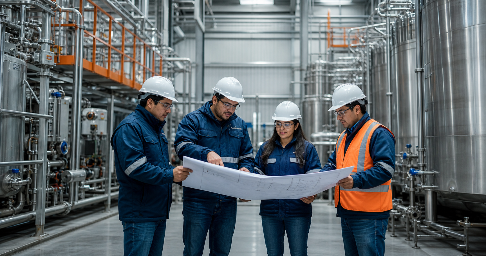

Mantenimiento preventivo
Inspecciones regulares y planificadas para detectar posibles problemas y prevenir fallas en los equipos.
- Inspecciones
- Revisiones
- Acciones planificadas
Servicios de mantenimiento preventivo y correctivo para contribuir al funcionamiento eficiente y confiable de los equipos industriales.

Tipos de mantenimiento

Inspecciones regulares y planificadas para detectar posibles problemas y prevenir fallas en los equipos.
Intervenciones técnicas para diagnosticar y resolver problemas cuando se presentan averías.